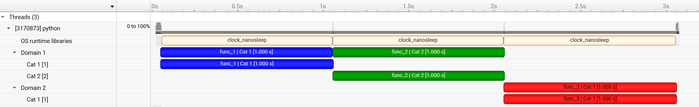
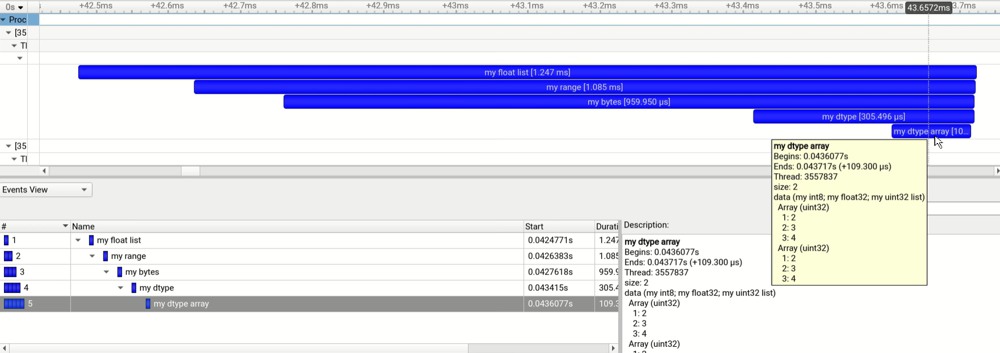

Annotation Attributes#
Message
Associate an annotation with a message, e.g., the function name when decorating a function.
Color
The color attribute can be used to guide the tool’s visualization of annotations.
Domain
Domains enable scoping of annotations. Each domain maintains its own categories, range stacks and registered strings.
By default, all annotations are in the default domain. Additional domains with distinct names can be registered by using
nvtx.get_domain().It is recommended to use a single (non-default) domain per library.
Category
Categories can be used to group annotations within a domain.
Payload
Additional data associated with the annotation.
Parmeters or metadata are recommended to be added as payloads, rather than embedding them into the message string.
Payloads provide a separation between the message and the data of the event, which is often useful for analysis.
In the Nsight Systems GUI, payloads are displayed in the tooltip of the event and in the event view.
Supported Types:
int: 64-bit signed integer
float: 64-bit floating point
numpy.ndarray: NumPy arrays (requires NumPy)
Including Structured arrays.
list, tuple, range: Converted to NumPy arrays (requires NumPy)
bytes: Byte sequences (requires NumPy)
Example:
import time
import nvtx
@nvtx.annotate(color="blue", domain="Domain 1", category="Cat 1")
def func_1():
time.sleep(1)
@nvtx.annotate(color="green", domain="Domain 1", category="Cat 2")
def func_2():
time.sleep(1)
@nvtx.annotate(color="red", domain="Domain 2", category="Cat 1")
def func_3():
time.sleep(1)
func_1()
func_2()
func_3()
Profiling the above code with Nsight Systems will produce the following timeline:

Extended Payload Example:
import nvtx
import numpy as np
# Examples with builtin Python iterable objects.
nvtx.push_range(message='my float list', payload=[1, 2.5, 3.5, 4.5])
nvtx.push_range(message='my range', payload=range(10))
nvtx.push_range(message='my bytes', payload=b'\xde\xad\xbe\xef')
# Example with structured datatype.
# Payload is passed as a NumPy array.
my_dtype = np.dtype([
('my int8', np.int8),
('my float32', np.float32),
('my uint32 list', np.uint32, 4)
])
nvtx.push_range(message='my dtype', payload=np.array((10, 20.5, [1,2,3,4]), dtype=my_dtype))
nvtx.push_range(message='my dtype array',
payload=np.array([(10, 20.5, [1,2,3,4]),(30, 40.5, [1,2,3,4])], dtype=my_dtype))
# Pop all pushed ranges.
for _ in range(5):
nvtx.pop_range()
Profiling the above code with Nsight Systems will produce the following timeline:
